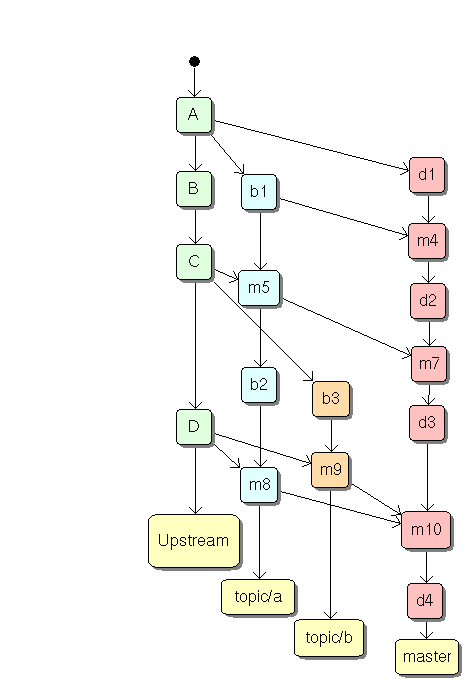
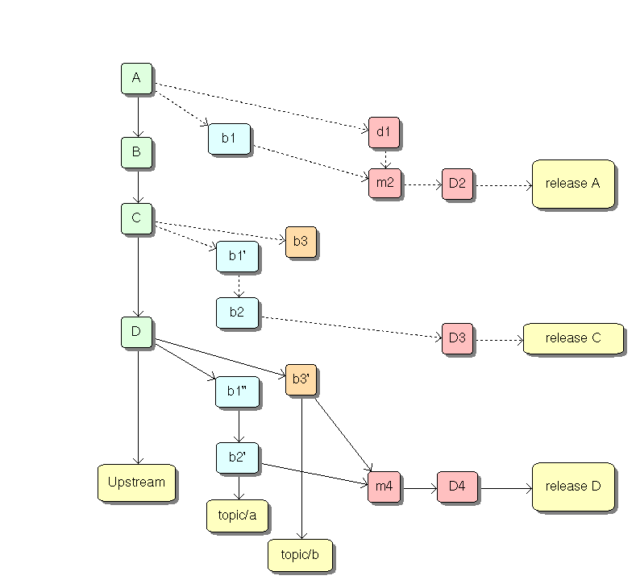
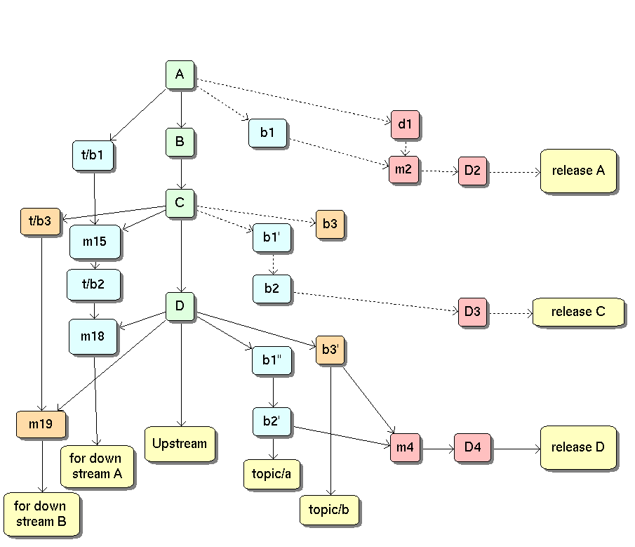
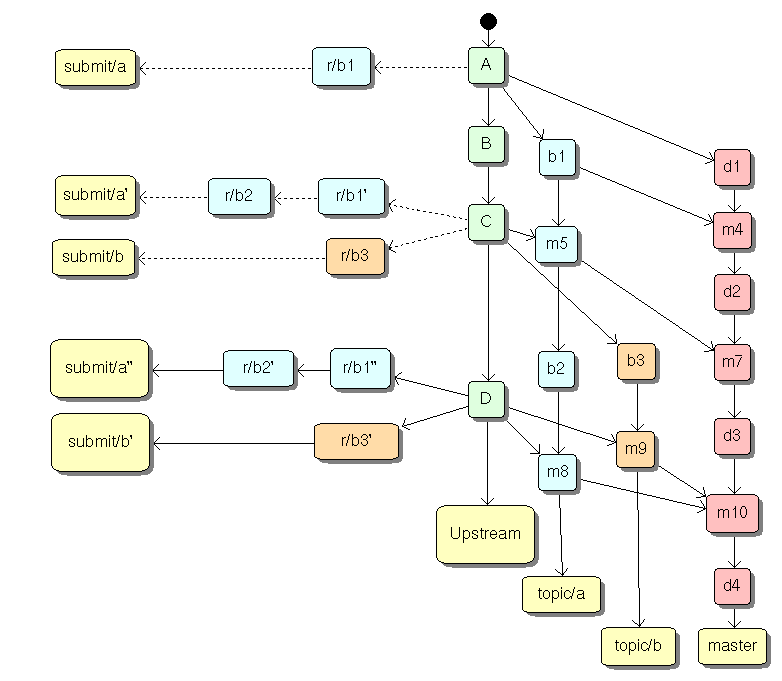

| Previous | Next | 5 Work-flow details | 7 |

This case is pretty straight forward. All the branches are available to eveyone, and work may be based off any of them. However, the branch history, for any topic branch, is full of merge nodes where code from upstream was merged, which some people see as clutter.
What do maintainers do?
git checkout upstream git pull origin git checkout topic/a git merge upstream git checkout topic/b git merge upstream git checkout master git merge topic/a topic/b # do the release thing git commit
"Are you rebasing or merging?" seems to be the 64 thousand dollar question over in vcs-pkg discussions. Various people have offered their preferences, and indeed, several case studies of work flows have been presented, what is lacking is an analysis of the work-flow; an exploration of which methodology has advantages, and whether there are scenarios in which the other work flow would have been better.
Oh, what are all these work flows about, you ask? Most of the issues with packaging software for distributions have a few things in common: there is a mainline or upstream source of development. There are zero or more independent lines of development or ongoing bug fixes that are to be managed. And then there is the tree from which the distribution package is to be built. All this talk about packaging software work flows is how to best manage asynchronous development upstream and in the independent lines of development, and how to create a coherent, debuggable, integrated tree from which to build the distributions package.
The rebasing question goes to the heart of how to handle the independent lines of development using git; since these lines of development are based off the main line of development, and must be periodically synchronized. What follows here is a first look at a couple of important factors that will have bearing on that question, and packaging software for a distribution using Git in general. This is heavily geared towards git (nothing else does rebases so easily, I think), but some of the concepts should be generic. I am not considering the stacked set of quilt patches source controlled with Git in this article (I don't understand that model well enough to do an analysis)
As a teaser, there is a third answer: neither. You can just add an independent line of development, and just let it sit: don't rebase, and don't merge; and in some circumstances that is a winning strategy.
Take the rebasing issue. First, rebasing is for private branches -- not for anything you publish. Whether or not you should have a private branch that you rebase or not depends on a number of factors -- firstly, there is the question of which of the stake holder constituencies are most important to you. There are at least three constituencies involved here:
If you publish a branch (whether or not you mean downstream developers to base their work on it or not), your published repository will be set up by default to deny any non-fast-forward pushes. This is done for the reason we have been talking about -- it would make it impossible for others to track the code and merge it into their local clones. So, if you plan on publishing rebased branches (with warnings to downstream developers to only cherry pick from it), you still will have to force the push.
Now, depending on where you are on the totem pole, some of these constituencies are more important than others. At the very top, you don't have an upstream. For example, Git development. They just use a mainline, and a rebased pending updates branch. All their downstream is cautioned never to base work on the pending updates series. So, rebased lines of development work for them, since they are upstream, and that is the most important constituency in their work-flow.
If you are too low on the totem pole to have any downstream developers, and you can live with throw away integration branches, rebased lines of development work as well. But as soon as you have downstream developers or you are working with other people (yourself on your laptop is another person as well), rebasing stops being an option. A major advantage of a distributed SCM is for accessing the repository from different locations; if you do, rebase messes with that.
Are the stake holders the only factor in you decision? Not by a long shot. Take, for instance, the issue of how active your independent lines of development are, and how big the patch series is, and whether you want to do a functional test for each topic branch.
If you have a single, small patch ( a simple bug fix, for example), you can just create a branch, apply the bug fix to the integration branch, and just let the branch be.
As upstream development happens, it gets merged into the integration branch where you have already merged your bug fix branch
The problem is that with this method you can never merge back into the integration branch without any conflicts: since now you have two different commits on the topic branch and the integration branch making the same changes. This is only feasible if you only cherry pick real changes from your topic branches into your integration branch, and it makes easier to miss fixes (since you are making the same change twice).
It might be better just to merge upstream into your topic branches first, resolving conflicts as you go, and then merge all topic branches into you integration branch, bringing in all the fixes. You might have to do some additional conflict resolution in the integration branch, depending on the overlap in your topics. This is the only viable option for larger or more active topic branches, so special casing for small topic branches is probably not worth the effort.
For a large patch on a topic branch, the chances are that you'll have to merge almost every upstream version, since the chances are higher of some changes overlapping; might as well get into a pattern of merging the upstream branch into all the topic branches, and, indirectly, the integration branch. Also, if there are downstream developers (more likely with large features like this), you need to keep the topic branch(es) up to date.
If your topic branch is being actively developed, you need to constantly merge it into your integration branch. Whenever upstream updates happen, you need to merge the upstream branch into the topic branch, and then merge the topic branch into the integration branches. Again, delayed integration of the upstream branch into the topic branches is unlikely to work well, and works not at all if you have downstream developers basing their work on your topic branches.
If you or a downstream developer need to compile and test each topic branch independently (instead of all together, in the integration branch), you must merge each upstream change into a feature branch. Rebasing or not depends on whether or not the branch has been published.
If your topic branches are public, then rebasing is out – unless you have strong warnings in place about people not basing their work on this branch. Rewriting history (which is what a rebase is) out from under people basing their work on yours is rude, and may cause a lot of work to stitch things back together.
If you are packaging software as a part of a team, team members need to have access to each other's branches (to pick up if you are busy, to see pending changes, to avoid duplication of work). This means public topic branches, and thus no rebasing.
This section is the result of discussion with Bart Trojanowski, and incorporates material from his private communication (with permission).
In the figures that follow:
Each one of these examples has upstream making four releases, labelled A, B, C and D. There are two topic or feature branches, labeled "topic/a" and "topic/b", one of which has two commits, and the other one has one commit. In all the examples, there are four Debian releases that happen during the interval tracked. I have created these examples with an explicit upstream tracking branch; you can get away with fetch and origin/naster if you do not want a local tracking branch. The dotted lines represent a topic branch earlier in the history of the workflow which got rebased away (to get the final state, pretend that the nodes linked by the dotted lines do not exist.)
This case is pretty straight forward. All the branches are available to eveyone, and work may be based off any of them. However, the branch history, for any topic branch, is full of merge nodes where code from upstream was merged, which some people see as clutter.
What do maintainers do?
git checkout upstream git pull origin git checkout topic/a git merge upstream git checkout topic/b git merge upstream git checkout master git merge topic/a topic/b # do the release thing git commit

As mentioned earlier, The dotted lines represent a topic branch earlier in the history of the workflow. I want to stress that his work-flow has limited utility; and only when you do not have people basing their work off your banches. Since you never know who might want to base their work off you in the future …
In this case, the release is made off a throw away release branch, which essentially becomes unusable as soon as a new upstream release comes and there is a rebase operation. However, at any given time, the rebased topic branch is nice, clean, and rebased against the latest upstream, making it really easy to feed patchs into the upstream code.
However, downstream developers are seriously incovenienced, since all the branches are either thro away or rebased.
What do maintainers do?
git checkout upstream git pull origin git checkout topic/a git rebase upstream git checkout topic/b git rebase upstream # create throw away branch git checkout -b release-A upstream git merge topic/a topic/b # do the release thing git commit

The scenario is identical to the rebase case, witht he difference that we carry an additional set of branches around for the downstream folks, but we still release from throw away branches. This is almost strictly worse than the next case, since derivative distributors for not have a stable branch from which the packages are built – since we are building packages from a throw away branch.
In the figure, the two "for downstream" branches are never rebased, always merge with upstream, and cherry pick changes from the current topic branches. If there is overlap, integration work will have to be done separately in the "for downstream" branches (but will often be the same disambiguation logic as was needed when rebasing the topic branch). The "for downstream" branches are just like the branches in the pure merge case above; with the difference that merges into the master branch are not happening (since we do not have a long lasting integration branch in this scenario).
What do maintainers do?
Note:: I do not yet understand what the reset and merge -s are doing.
git checkout upstream git pull origin git checkout topic/a git rebase upstream git checkout topic/b git rebase upstream git checkout downstream/a git branch tmp/a git reset --hard downstream/a git merge -s ours tmp/a git branch -d tmp/a git checkout downstream/b git branch tmp/b git reset --hard downstream/b git merge -s ours tmp/b git branch -d tmp/b # create throw away branch git checkout -b release-A upstream git merge topic/a topic/b # do the release thing git commit

This is my preferred mechnism. I only create the submit branches on demand; and the submit branches are cherry picked and rebased from the topic branches when I am ready to submit patches upstream – so in reality, my work-flow is really like the plain merged branches above, with the proviso that I can create the submit branches easily if I needed.
The submit branches, when they exist, look very much like the topic branches in the pure rebase case, except that we never gather them to make a release (since the release is done off the topic branches, not the submit branch set).
What do maintainers do?
git checkout upstream git pull origin # the submit branch creation is optional git checkout submit/a git rebase upstream git checkout submit/b git rebase upstream git checkout topic/a git merge upstream git checkout topic/b git merge upstream git checkout master git merge topic/a topic/b # do the release thing git commit
Based on which stake-holders you have, and which ones are most important to you, how big your topic branch differences are, and how active the topic development is, you can decide whether or not you rebase or merge, and whether you do delayed integration into topic branches or not.
Now for my personal preferences: I am low down on the totem pole, mostly, but I like to publish my topic branches. So I will not rebase my public topic branches. I will have persistent integration branches, since derived distribution folks are likely to need that. I will also always merge new upstream into my topic branches, just in case someone is basing their work off my public topic branch.
But since I have to cater to upstream as well, I plan on having a private, rebasable submission branch for each topic; and cherry pick original commits from the topic branch on to that. The submission branches will be rebased before submitting to the latest upstream version before submission, or more often if I feel like doing so.
The topic branches will be named "topic/foo". submission branches will be named "submission/foo", and there will be a "tmp/bar" name space for ephemeral branches. This will make it easier to script things like new upstream versions.
Thanks to Martin F. Krafft and James Vega for reviewing this article, and providing feedback and corrections, and many people involved in the vcs-pkg project for the material this analysis is based on. A special mention should be made about Bart Trojanowski, who provided ideas about concrete solutions for handling topic branches.
Author: Manoj Srivastava <srivasta@debian.org>
Date: <2008-04-01 Tue>